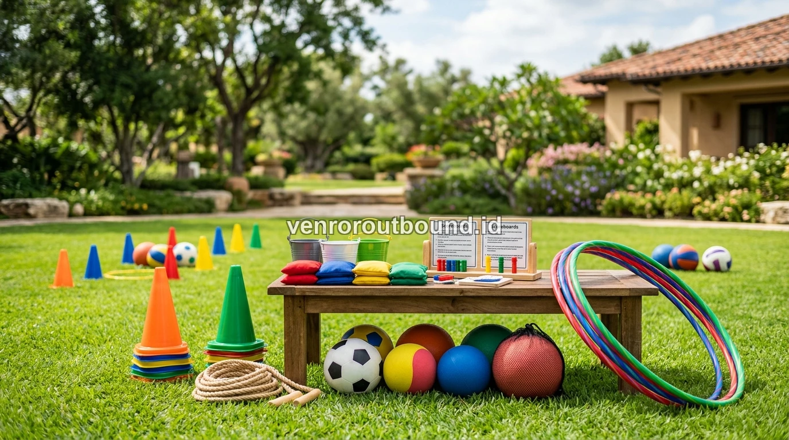

1. Mengapa Family Gathering Outbound Jadi Kunci Keharmonisan Keluarga?
Family gathering outbound adalah solusi terbaik menyatukan keluarga besar lewat permainan kebersamaan yang meruntuhkan sekat usia. Mulai dari anak-anak hingga lansia dapat berinteraksi dengan gembira.
Momen kumpul keluarga besar, reuni trah keluarga, maupun arisan tahunan sejatinya adalah momen sakral yang sangat dinantikan untuk memperbarui tali silaturahmi. Namun, kenyataan di lapangan sering kali menunjukkan ironi: para ibu disibukkan dengan urusan dapur dan konsumsi hingga kelelahan, bapak-bapak berkumpul sendiri membicarakan urusan pekerjaan, anak-anak muda serta keponakan tenggelam dalam layar ponsel (*gadget isolation*), dan kelompok kakek-nenek hanya duduk terdiam di sudut ruangan tanpa interaksi yang intens.
Kondisi pertemuan pasif yang hanya berpusat pada agenda makan bersama di restoran atau ruang tamu tertutup kerap memicu kecanggungan. Ketika obrolan kehilangan topik menarik, pembicaraan sering kali tanpa sengaja bergeser ke topik sensitif, perbandingan pencapaian antar saudara, atau gosip keluarga yang berpotensi melukai perasaan. Di sinilah pendekatan family gathering outbound hadir sebagai revolusi interaksi positif.
Dengan mengalihkan arena pertemuan ke alam terbuka yang hijau dan asri, seluruh anggota keluarga diajak untuk melangkah keluar dari rutinitas harian. Melalui simulasi permainan yang dikemas secara fun, edukatif, dan penuh kehangatan, sekat formalitas antargenerasi dapat runtuh dengan sendirinya tanpa paksaan.

Team Building vs Fun Games: Mana yang Tepat untuk Acara Anda?
Ketahui perbedaan fokus tujuan dan tingkat intensitas permainan sebelum menentukan format kegiatan bersama.
2. Lima Tantangan Klasik Kumpul Keluarga Besar dan Solusi Praktisnya
Menjadi panitia acara reuni keluarga atau koordinator arisan keluarga bukanlah tugas yang mudah. Berikut adalah lima tantangan mendasar yang sering dihadapi serta strategi solutif untuk mengatasinya:
A. Rentang Usia Peserta yang Sangat Lebar
Dalam satu acara kumpul keluarga, peserta berkisar dari balita usia 3 tahun, anak-anak usia sekolah, remaja, kelompok dewasa produktif, hingga lansia berusia di atas 70 tahun. Kebutuhan fisik dan minat mereka tentu berbeda jauh.
Solusi: Terapkan sistem tim kolaboratif lintas generasi, di mana lansia memegang peran perencana strategi, orang tua sebagai koordinator, dan anak-anak sebagai eksekutor permainan yang lincah.
B. Rasa Canggung Antar Kerabat yang Jarang Bertemu
Keponakan baru, menantu yang baru bergabung, atau sepupu yang tinggal di luar kota kerap merasa segan untuk memulai obrolan mendalam.
Solusi: Hadirkan sesi ice breaking ringan berupa tebak fakta unik keluarga, estafet kata berantai, atau permainan gerak sederhana yang langsung memecah kebekuan sejak menit pertama.
C. Panitia Mengalami Kelelahan Fisik Berlebih
Panitia keluarga yang bertugas menyusun rundown, menyiapkan perlengkapan game, dan memandu acara sering kali kehilangan kesempatan untuk menikmati liburan bersama.
Solusi: Serahkan manajemen aktivitas teknis kepada fasilitator outbound profesional agar seluruh anggota panitia dapat ikut bermain dan tertawa bersama keluarga.
D. Ketergantungan Terhadap Gawai (Screen Addiction)
Generasi muda dan anak-anak cenderung asyik dengan media sosial atau game online masing-masing jika acara berlangsung pasif.
Solusi: Alihkan perhatian mereka lewat permainan interaktif di lapangan hijau luas yang melibatkan dinamika visual, gerak fisik menyenangkan, dan kompetisi kelompok yang seru.
E. Rundown yang Terlalu Padat atau Terlalu Membosankan
Jadwal yang terlalu ketat membuat lansia dan balita kelelahan, sementara jadwal yang terlalu longgar tanpa aktivitas terarah membuat peserta bosan.
Solusi: Terapkan durasi emas fun games 2 hingga 2.5 jam di pagi hari saat matahari bersahabat, disusul dengan makan bersama dan waktu relaksasi bebas di area resort/villa.

3. Konsep Fun Games Ramah Usia: Dari Anak 5 Tahun Hingga Lansia
Kunci keberhasilan dalam menyusun simulasi permainan untuk family gathering outbound adalah memastikan seluruh permainan bersifat non-kontak fisik keras (*zero high-impact contact*), tidak memerlukan daya tahan atletis, namun sarat dengan unsur keceriaan, komunikasi, dan kerja sama ringan.
Berikut adalah beberapa model simulasi fun games yang terbukti sangat disukai dalam acara keluarga besar:
- Tebak Memori & Pohon Silsilah Ceria: Permainan interaktif di mana tiap kelompok menebak foto masa kecil kerabat, cerita lucu masa lalu, atau garis keturunan trah keluarga. Simulasi ini memberikan penghormatan mendalam bagi para sesepuh keluarga.
- Estafet Bola Kebersamaan: Mengalirkan bola ringan menggunakan media talang plastik atau kain berlubang secara berkelompok menuju keranjang sasaran. Permainan ini melatih koordinasi visual dan kesabaran anak-anak bersama orang tua.
- Menara Harapan Keluarga: Menyusun balok spons atau cangkir ramah lingkungan dengan tali kelompok tanpa menyentuh langsung media balok. Aktivitas ini mengajarkan sinkronisasi gerakan dan melatih toleransi antargenerasi.
- Yel-Yel & Salam Keakraban: Setiap kelompok keluarga kecil membuat gerakan dan yel-yel spontan yang lucu sebelum memulai permainan, memicu gelak tawa yang mencairkan kekakuan secara alami.
4. Panduan Memilih Venue Alam Terbuka di Kawasan Batu & Malang
Pemilihan lokasi venue adalah pondasi utama kenyamanan acara kumpul keluarga. Kawasan wisata pegunungan seperti Kota Batu dan Malang menjadi destinasi favorit karena menawarkan perpaduan udara sejuk, pemandangan perbukitan hijau, dan ketersediaan resort ramah keluarga.
Saat melakukan survei lokasi, pastikan panitia memeriksa poin-poin kelayakan berikut:
- Kontur Lapangan yang Rata: Pastikan lapangan rumput bebas dari lubang tersembunyi, bebatuan tajam, atau lereng curam agar balita dapat berlari dengan aman dan lansia dapat berjalan dengan nyaman.
- Area Teduh yang Cukup: Ketersediaan pohon rindang, gazebo tertutup, atau pendopo samping lapangan sangat penting agar peserta lansia dapat duduk santai sambil tetap menyaksikan keseruan permainan.
- Aksesibilitas Fasilitas Sanitasi: Toilet yang bersih, tidak licin, dan berjarak dekat dari lapangan kegiatan menjadi syarat mutlak untuk kenyamanan orang tua dan anak-anak.
- Akses Parkir Kendaraan: Area parkir luas yang dapat diakses langsung oleh bus pariwisata maupun kendaraan pribadi keluarga besar.
Bagi panitia yang menginginkan kepraktisan tanpa harus repot mencari izin lapangan, properti permainan, maupun menyewa sound system terpisah, Anda dapat meninjau rincian lengkap pada penawaran Paket Standard Family Gathering kami yang dirancang all-in untuk kenyamanan keluarga.

7 Ide Game Outbound Kreatif untuk Mencairkan Kekakuan
Ragam simulasi ice breaking yang terbukti sukses membangun antusiasme dan komunikasi positif peserta.
5. Peran Krusial Fasilitator Profesional dalam Menjaga Dinamika Acara
Mengapa kehadiran instruktur atau fasilitator pihak ketiga sangat berpengaruh pada kesuksesan gathering keluarga? Berikut adalah beberapa keuntungan strategisnya:
- Sikap Netral dan Menghibur: Fasilitator profesional memandu jalannya acara dengan gaya komunikasi yang santun, energik, dan netral. Tidak ada anggota keluarga yang merasa diperlakukan tidak adil atau dipaksa melakukan hal yang memalukan.
- Manajemen Waktu yang Presisi: Instruktur memastikan setiap rangkaian acara berjalan sesuai susunan rundown tanpa ada momen yang berlarut-larut atau menjemukan.
- Kesiapsiagaan Perlengkapan & Keselamatan: Seluruh properti simulasi diperiksa kebersihannya dan diatur rapi sebelum peserta tiba di lokasi.
- Dokumentasi Momen Emas: Momen tawa lepas kakek bersama cucu, kekompakan suami-istri, serta foto keluarga besar terekam secara apik tanpa ada anggota yang terlewat karena harus bertugas menjadi fotografer dadakan.
6. Checklist Persiapan Family Gathering Bagi Panitia Arisan & Keluarga
Untuk memastikan acara berjalan mulus tanpa kendala mendadak, gunakan daftar periksa persiapan praktis berikut ini:
- [ ] H-30: Bentuk kepanitiaan kecil (koordinator acara, konsumsi, akomodasi, dan transportasi) serta tetapkan estimasi tanggal dan anggaran kas.
- [ ] H-21: Konfirmasi jumlah pasti anggota keluarga yang hadir beserta rentang usia (balita, anak, dewasa, lansia) untuk penyesuaian porsi katering dan modul game.
- [ ] H-14: Hubungi provider outbound untuk mengunci slot tanggal pelaksanaan dan menyepakati tema banner acara serta lokasi venue.
- [ ] H-7: Informasikan *dress code* pakaian yang nyaman (kaos keluarga, celana santai, sepatu olahraga) serta perlengkapan pribadi (obat pribadi, topi, pakaian ganti anak).
- [ ] Hari H: Tiba di lokasi dengan hati gembira dan serahkan pemanduan kegiatan kepada tim instruktur untuk menikmati kebersamaan seutuhnya.
7. Wujudkan Kumpul Keluarga yang Sarat Cerita Indah
Keluarga yang harmonis tidak tercipta secara kebetulan, melainkan dirawat melalui momen-momen kebersamaan yang dirancang dengan penuh cinta dan perhatian. Menyelenggarakan family gathering outbound bukan sekadar tentang agenda liburan keluar rumah, melainkan investasi emosional berharga untuk merekatkan kembali ikatan batin antar generasi.
Saat tawa bersama menggema di tengah sejuknya alam terbuka, segala rasa canggung dan jarak emosional akan mencair, meninggalkan kenangan manis yang akan selalu diceritakan kembali dalam setiap pertemuan keluarga di masa depan.
Rencanakan Gathering Keluarga Besar Anda Bersama Kami
Jadikan kumpul keluarga berikutnya penuh cerita seru. Hubungi admin Vendor Outbound di +62 82211221909 untuk konsultasi konsep dan penawaran lokasi terbaik.
Hubungi via WhatsAppPertanyaan Sering Diajukan (FAQ)

Arby Ardiansyah
Praktisi pengembangan SDM dan perancang program experiential learning dengan pengalaman lebih dari 8 tahun memfasilitasi ratusan kegiatan outbound korporat, BUMN, dan acara kebersamaan keluarga di seluruh Jawa Timur.